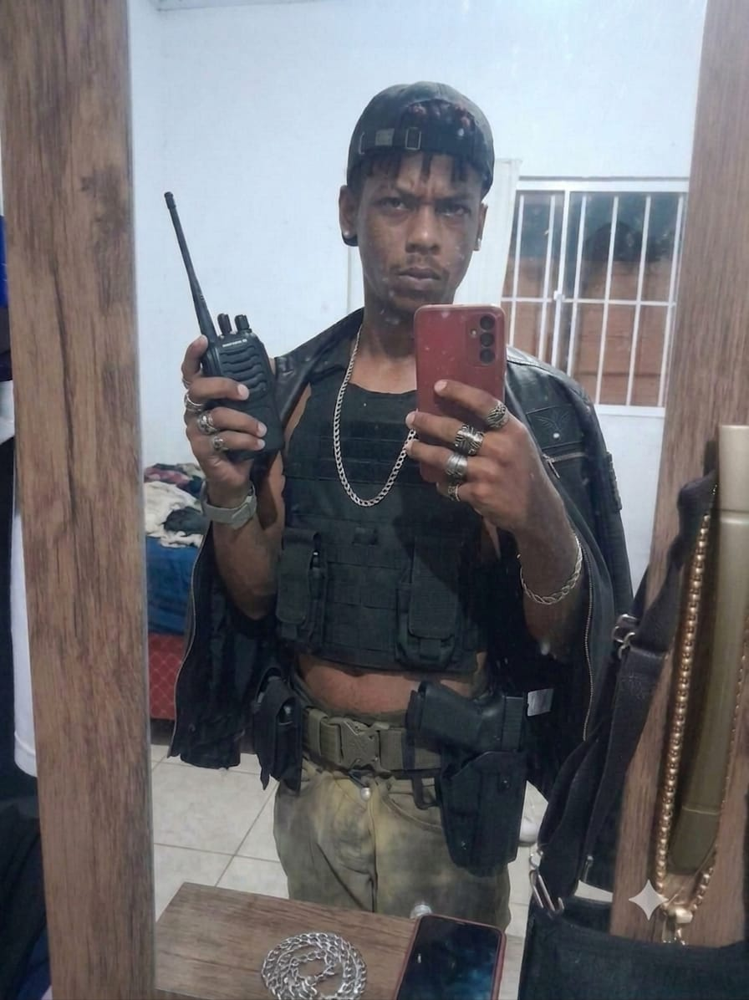
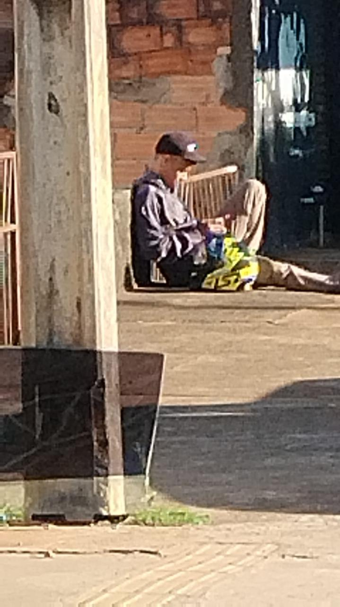

URGENTE: Traficante da Rocinha conhecido como "Desbaratinado" está foragido em Goiânia

As forces de segurança do Estado de Goiás, em operação conjunta com o setor de inteligência da Polícia Civil do Rio de Janeiro, emitiram um alerta máximo nesta quinta-feira. O alvo é Juliano, criminoso de alta periculosidade que atende no submundo pelo vulgo de "Desbaratinado".
Nascido e criado na comunidade da Rocinha, na Zona Sul do Rio de Janeiro, Juliano iniciou sua extensa ficha criminal como "fogueteiro" — função estratégica na qual era responsável por acionar fogos de artifício para alertar os líderes do tráfico sobre a incursão de viaturas do BOPE e da Polícia Militar. Investigações recentes apontam que ele ascendeu na hierarchy, envolvendo-se diretamente com a logística de distribuição de entorpecentes.
Último Avistamento e Carregamento
A situação ganhou novos e urgentes contornos na manhã de hoje. Câmeras de segurança registraram o que seria a última aparição confirmada de "Desbaratinado" em solo goiano. Segundo fontes exclusivas ligadas à investigação, o traficante foi flagrado enquanto aguardava a chegada de um grande carregamento de drogas.

As investigações apontam que a carga recebida seria rapidamente pulverizada e distribuída por toda a região metropolitana, visando abastecer rotas comerciais ilícitas e fortalecer o caixa da facção, incluindo pontos estratégicos de escoamento no município de Aparecida de Goiânia.
As autoridades alertam a população: o suspeito é considerado perigoso. A orientação é que civis não tentem qualquer tipo de abordagem caso identifiquem alguém com as características de Juliano. Qualquer informação sobre o paradeiro de "Desbaratinado" deve ser repassada imediatamente através do número 190 ou do Disque-Denúncia (181), com garantia de sigilo absoluto.
A "Operação Barreira", que vigia as rodovias e entradas estratégicas da capital goiana e entorno, continua em vigor por tempo indeterminado.